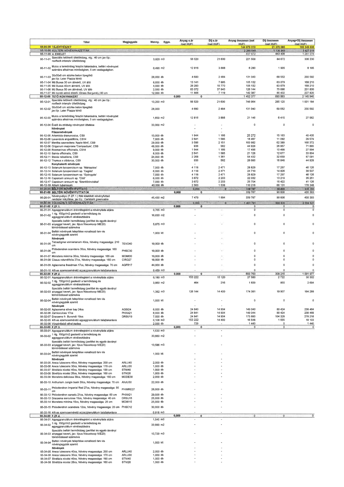

| Tétel | Menny. | Egys. | Anyag e.ár (net HUF) | Díj e.ár (net HUF) | Anyag összesen (net HUF) | Díj összesen (net HUF) | Anyag+Díj összesen (net HUF) |
|---|---|---|---|---|---|---|---|
| 95-11-01 Speciális tetőkerti ültetőközeg, vtg.: 40 cm jav tlp.: rooftech intenzív ültetőközeg | 3,920 | m3 | 56 520 | 21 600 | 221 558 | 84 672 | 306 230 |
| 95-11-02 Mulcs a termőréteg felszíni takarására, beltéri növényzet számára alkalmas minőségben, 5 cm vastagságban. | 0,490 | m2 | 12 816 | 3 888 | 6 280 | 1 905 | 8 185 |
| 95-11-03 30x30x6 cm szürke beton tipegőkő jav.tlp: Leier Piazza térkő | 28,000 | db | 4 680 | 2 484 | 131 040 | 69 552 | 200 592 |
| 95-11-04 Mű Buxus 30 cm átmérő, UV álló | 8,000 | db | 13 141 | 7 885 | 105 132 | 63 079 | 168 210 |
| 95-11-05 Mű Buxus 40cm átmérő, UV álló | 4,000 | db | 26 283 | 15 770 | 105 132 | 63 079 | 168 210 |
| 95-11-06 Mű Buxus 50 cm átmérő, UV álló | 2,000 | db | 63 072 | 37 843 | 126 144 | 75 686 | 201 830 |
| 95-11-07 Mű bordó színű díszfű (Grass Burgundy) 90 cm | 12,000 | db | 11 866 | 7 119 | 142 387 | 85 432 | 227 820 |
| 95-12-01 Speciális tetőkerti ültetőközeg, vtg.: 40 cm jav tlp.: rooftech intenzív ültetőközeg | 13,200 | m3 | 56 520 | 21 600 | 746 064 | 285 120 | 1 031 184 |
| 95-12-02 30x30x6 cm szürke beton tipegőkő jav.tlp: Leier Piazza térkő | 28,000 | db | 4 680 | 2 484 | 131 040 | 69 552 | 200 592 |
| 95-12-03 Mulcs a termőréteg felszíni takarására, beltéri növényzet számára alkalmas minőségben, 5 cm vastagságban. | 1,650 | m2 | 12 816 | 3 888 | 21 146 | 6 415 | 27 562 |
| 95-12-04 Évelő és zöldség növényzet ültetése | 33,000 | m2 | 0 | 0 | 0 | 0 | 0 |
| 95-12-05 Artemisia dranunculus, CS9 | 13,000 | db | 1 944 | 1 166 | 25 272 | 15 163 | 40 435 |
| 95-12-06 Lavandula angustifolia, CS14 | 7,000 | db | 2 641 | 1 585 | 18 487 | 11 092 | 29 579 |
| 95-12-07 Mentha sauveolens 'Apple Mint', CS9 | 29,000 | db | 3 586 | 2 151 | 103 982 | 62 389 | 166 372 |
| 95-12-08 Origanum majorana 'Compactum', CS9 | 48,000 | db | 936 | 562 | 44 928 | 26 957 | 71 885 |
| 95-12-09 Rosmarinus officinalis, CS14 | 9,000 | db | 1 944 | 1 166 | 17 496 | 10 498 | 27 994 |
| 95-12-10 Salvia officinalis, CS9 | 8,000 | db | 2 641 | 1 585 | 21 128 | 12 677 | 33 804 |
| 95-12-11 Stevia rebudiana, CS9 | 24,000 | db | 2 268 | 1 361 | 54 432 | 32 659 | 87 091 |
| 95-12-12 Thymus x citidorus, CS9 | 30,000 | db | 936 | 562 | 28 080 | 16 848 | 44 928 |
| 95-12-13 Solanum lycopersicum sp. 'Máriapócs' | 7,000 | db | 4 118 | 2 471 | 28 829 | 17 297 | 46 126 |
| 95-12-14 Solanum lycopersicum sp. 'Cegléd' | 6,000 | db | 4 118 | 2 471 | 24 710 | 14 826 | 39 537 |
| 95-12-15 Solanum lycopersicum sp. 'Gyöngyös' | 7,000 | db | 4 118 | 2 471 | 28 829 | 17 297 | 46 126 |
| 95-12-16 Capsicum annuum sp. 'Chili' | 6,000 | db | 3 672 | 2 203 | 22 032 | 13 219 | 35 251 |
| 95-12-17 Capsicum annuum sp. 'Szentlőrinckátai' | 7,000 | db | 3 672 | 2 203 | 25 704 | 15 422 | 41 126 |
| 95-12-18 Allium tuberosum | 43,000 | db | 2 563 | 1 538 | 110 218 | 66 131 | 176 348 |
| 95-20-01 Növényvályú (F.ZF.1.) fölé kitöltött növényfuttató rendszer kiépítése, jav tlp.: Caristahl greencable | 45,430 | m2 | 7 479 | 1 994 | 339 767 | 90 606 | 430 393 |
| 95-31-01 Agyaggranulátum drénrétegként a növényláda aljára | 0,765 | m3 | 0 | 0 | 0 | 0 | 0 |
| 95-31-02 1 rtg. 150g/m2 geotextil a termőközeg és agyaggranulátum elválasztására | 16,830 | m2 | 0 | 0 | 0 | 0 | 0 |
| 95-31-03 Speciális beltéri termőközeg (perlittel és egyéb ásványi anyaggal kevert, jav. típus Nieuwkoop NIE20) tömörödéssel számolva | 5,875 | m3 | 0 | 0 | 0 | 0 | 0 |
| 95-31-04 Beltéri növények telepítése vonatkozó terv és növényjegyzék szerint | 1,000 | klt | 0 | 0 | 0 | 0 | 0 |
| 95-31-05 Tetrastigma voinierianum 40cs, Növény magassága: 210 cm | 19,000 | db | 0 | 0 | 0 | 0 | 0 |
| 95-31-06 Philodendron scandens 30cs, Növény magassága: 160 cm | 19,000 | db | 0 | 0 | 0 | 0 | 0 |
| 95-31-07 Monstera minima 30cs, Növény magassága: 165 cm | 19,000 | db | 0 | 0 | 0 | 0 | 0 |
| 95-31-08 Cissus rotundifolia 27cs, Növény magassága: 160 cm | 18,000 | db | 0 | 0 | 0 | 0 | 0 |
| 95-31-09 Aglaonema freedman 17cs, Növény magassága: 70 cm | 44,000 | db | 0 | 0 | 0 | 0 | 0 |
| 95-31-10 4/8-as szemcseméretű agyaggranulátum talajtakarásra | 0,459 | m3 | 0 | 0 | 0 | 0 | 0 |
| 95-32-01 Agyaggranulátum drénrétegként a növényláda aljára | 0,180 | m3 | 153 222 | 15 120 | 27 580 | 2 722 | 30 302 |
| 95-32-02 1 rtg. 150g/m2 geotextil a termőközeg és agyaggranulátum elválasztására | 3,960 | m2 | 464 | 216 | 1 839 | 855 | 2 694 |
| 95-32-03 Speciális beltéri termőközeg (perlittel és egyéb ásványi anyaggal kevert, jav. típus Nieuwkoop NIE20) tömörödéssel számolva | 1,382 | m3 | 126 144 | 14 400 | 174 381 | 19 907 | 194 288 |
| 95-32-04 Beltéri növények telepítése vonatkozó terv és növényjegyzék szerint | 1,000 | klt | 0 | 0 | 0 | 0 | 0 |
| 95-32-05 Aglaonema silver bay 24cs | 6,000 | db | 24 840 | 14 904 | 149 040 | 89 424 | 238 464 |
| 95-32-06 Zamioculcas 17cs | 6,000 | db | 24 841 | 14 904 | 149 044 | 89 424 | 238 468 |
| 95-32-07 Dracaena fr. Burundii 19cs | 7,000 | db | 24 841 | 14 904 | 173 890 | 104 328 | 278 218 |
| 95-32-05 4/8-as szemcseméretű agyaggranulátum talajtakarásra | 0,108 | m3 | 153 222 | 14 400 | 16 548 | 1 555 | 18 103 |
| 95-32-06 Vízszintjelző elhelyezése | 2,000 | db | 720 | 0 | 1 440 | 0 | 1 440 |
